Responsável pela transmissão de bits através de sinais elétricos, ópticos ou ondas de rádio. Define cabos, conectores, voltagem, sincronização e taxa de transmissão.
Organiza os bits em quadros (frames), controla o acesso ao meio físico e realiza detecção de erros. Trabalha com endereçamento físico (MAC).
Responsável pelo endereçamento lógico e roteamento de pacotes entre redes diferentes. Define o caminho que os dados percorrem utilizando protocolos como IP.
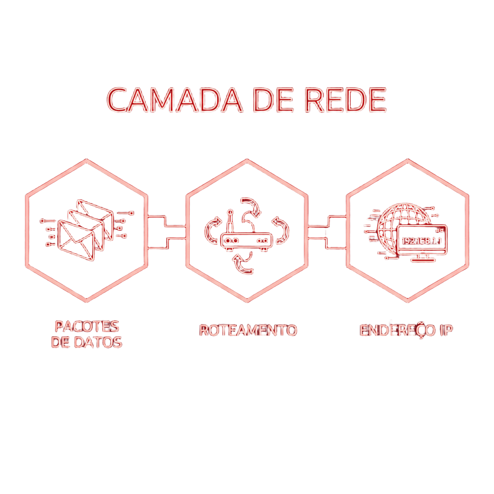
Garante a entrega confiável dos dados, realizando segmentação, controle de fluxo e correção de erros. Utiliza protocolos como TCP e UDP.
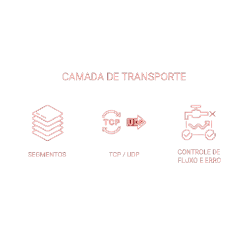
Estabelece, mantém e encerra sessões de comunicação entre aplicações, garantindo sincronização e controle de diálogo.
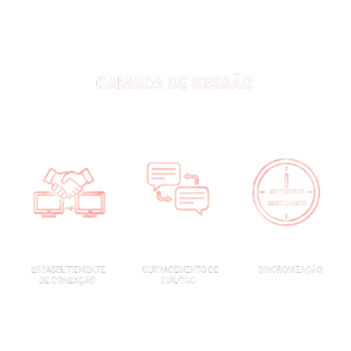
Responsável pela formatação dos dados, criptografia e compressão. Converte informações para que possam ser interpretadas corretamente pela aplicação.
Interface direta com o usuário e com softwares. Fornece serviços de rede como HTTP, FTP, SMTP e DNS.
O Modelo OSI (Open Systems Interconnection) é um modelo conceitual criado pela ISO para padronizar a comunicação entre sistemas de rede. Ele divide o processo de transmissão de dados em sete camadas independentes, cada uma com uma função específica. Essa organização facilita o desenvolvimento de protocolos, a interoperabilidade entre fabricantes e a identificação de falhas. Embora seja um modelo teórico, ele é amplamente utilizado como referência para compreender como a comunicação em redes de computadores funciona na prática.
Vamos entender mais a fundo a camada física do Modelo OSI. A camada física do modelo OSI, também chamada de layer 1 ou physical layer, trata da transmissão transparente de sequências de bits pelo meio físico, sendo a parte final da comunicação, ou seja, onde a transmissão pelo meio de comunicação realmente acontece. Na camada física do modelo OSI estão definidos os padrões mecânicos (conectores, painéis de conexão, cabos, etc…), funcionais (DCE ou DTE, por exemplo), elétricos (voltagens, codificação de linha, etc…) e procedimentos para acesso a esse meio físico. Nessa camada também temos as especificações dos meios de transmissão, como por exemplo: transmissão via satélite, cabo coaxial, radiotransmissão (rádios digitais ponto a ponto, Wifi, espalhamento espectral, etc.), par metálico (UTP e STP), fibra óptica (monomodo ou multimodo), etc…
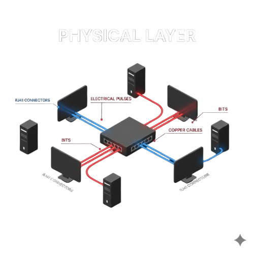
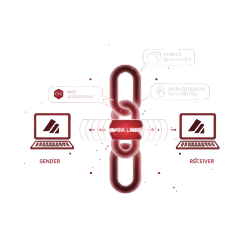
A Camada de Enlace de Dados, também chamada de Layer 2, é responsável por garantir a comunicação confiável entre dois dispositivos diretamente conectados. Ela organiza os bits recebidos da camada física em unidades chamadas quadros (frames). Nessa camada ocorre o controle de acesso ao meio (MAC), a detecção e, em alguns casos, correção de erros. Também é aqui que trabalham os endereços MAC, que identificam fisicamente cada dispositivo em uma rede local. Dispositivos como switches operam nessa camada, encaminhando quadros com base nos endereços MAC.
A Camada de Rede, conhecida como Layer 3, é responsável pelo roteamento dos pacotes entre redes diferentes. Ela define o caminho que os dados irão percorrer da origem até o destino. O principal protocolo dessa camada é o IP (Internet Protocol), responsável pelo endereçamento lógico dos dispositivos. Roteadores operam nessa camada, analisando o endereço IP para decidir o melhor caminho para encaminhar os pacotes. Também pode realizar fragmentação de pacotes quando necessário.
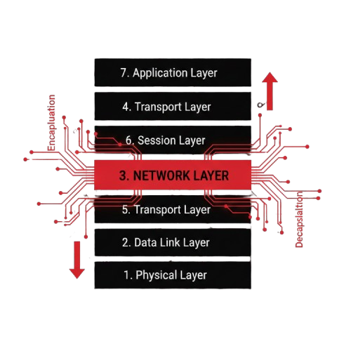
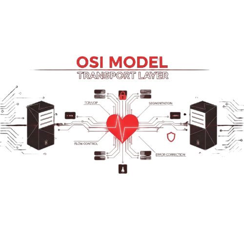
A Camada de Transporte (Layer 4) é responsável por garantir a entrega dos dados de forma confiável ou rápida, dependendo do protocolo utilizado. Os principais protocolos são TCP (Transmission Control Protocol), que garante entrega confiável com controle de erro e confirmação, e UDP (User Datagram Protocol), que envia dados sem confirmação, priorizando velocidade. Essa camada também realiza controle de fluxo e segmentação dos dados.
A Camada de Sessão (Layer 5) é responsável por estabelecer, gerenciar e encerrar sessões de comunicação entre aplicações. Ela controla o diálogo entre os dispositivos, podendo definir quem transmite e por quanto tempo. Também pode incluir pontos de verificação (checkpoints), permitindo retomar transmissões interrompidas. Essa camada garante que a comunicação entre aplicações ocorra de maneira organizada.
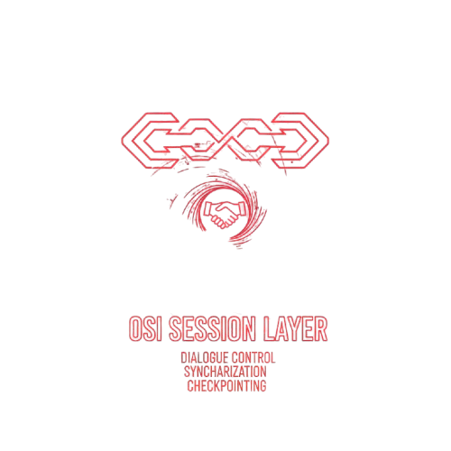
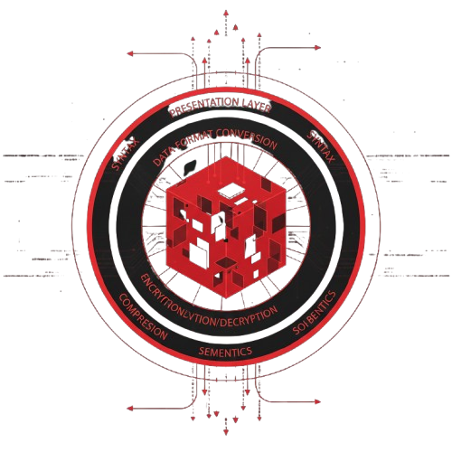
A Camada de Apresentação (Layer 6) é responsável por traduzir, criptografar e compactar os dados. Ela garante que a informação enviada pela aplicação de um sistema possa ser interpretada corretamente pela aplicação do sistema de destino. Atua na conversão de formatos (como ASCII, UTF-8), criptografia (como SSL/TLS) e compressão de dados. Pode ser considerada a "tradutora" do Modelo OSI.
A Camada de Aplicação (Layer 7) é a camada mais próxima do usuário final. Ela fornece serviços de rede diretamente para as aplicações. Protocolos como HTTP, HTTPS, FTP, SMTP e DNS operam nessa camada. É aqui que ocorrem as interações como acessar sites, enviar e-mails ou transferir arquivos. Essa camada não é a aplicação em si, mas sim os protocolos que permitem que a aplicação utilize a rede.
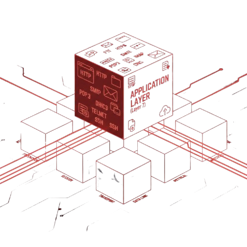